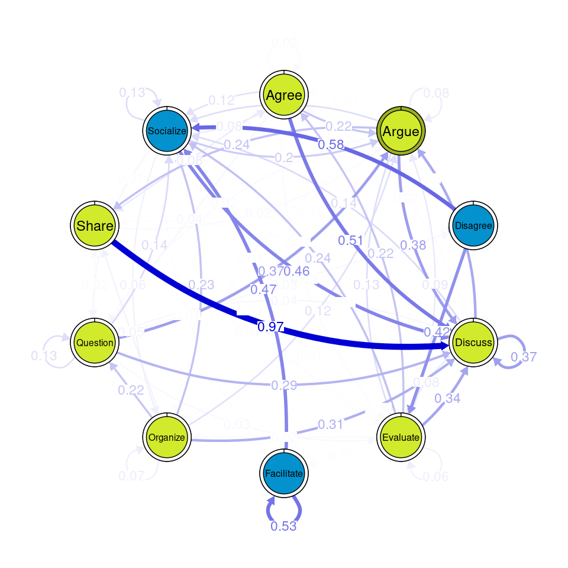
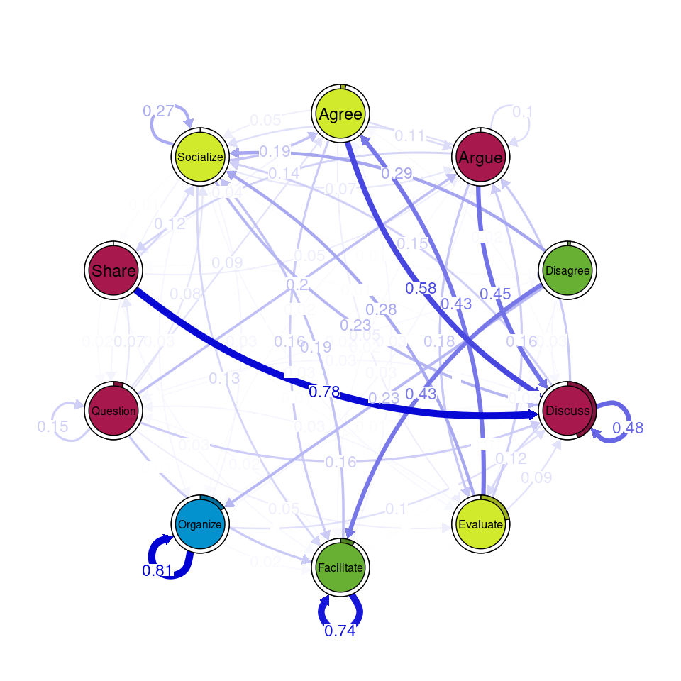
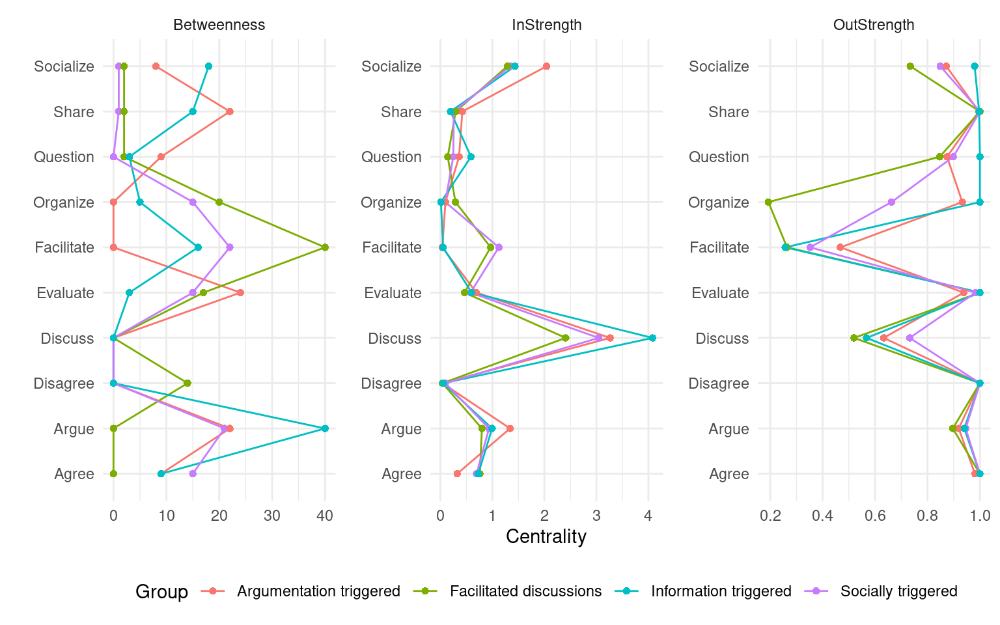
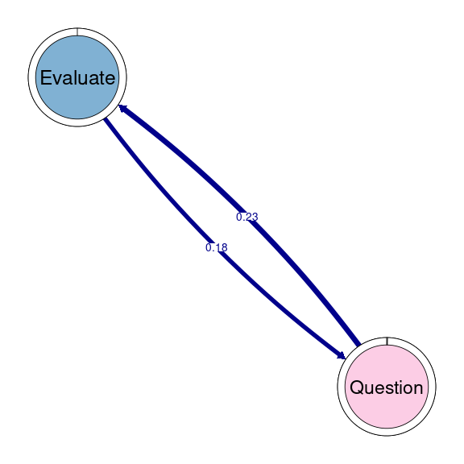
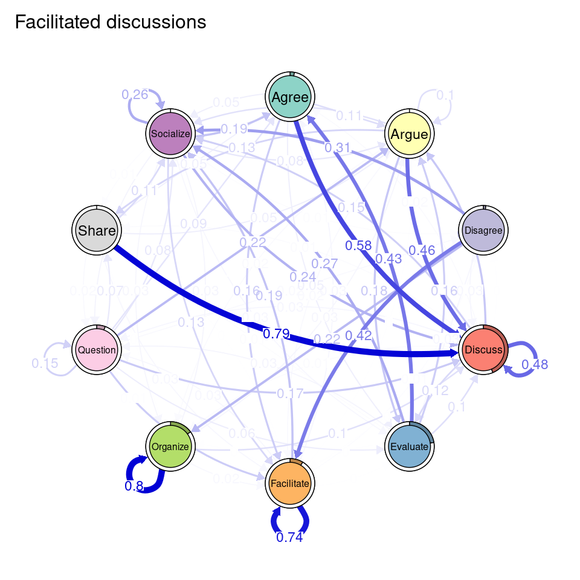
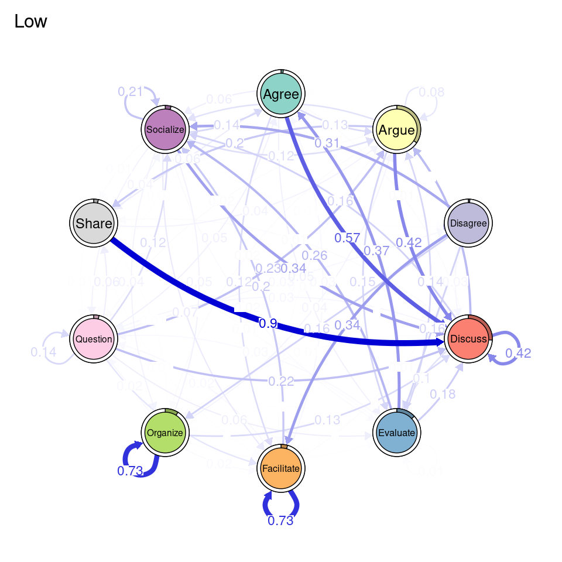
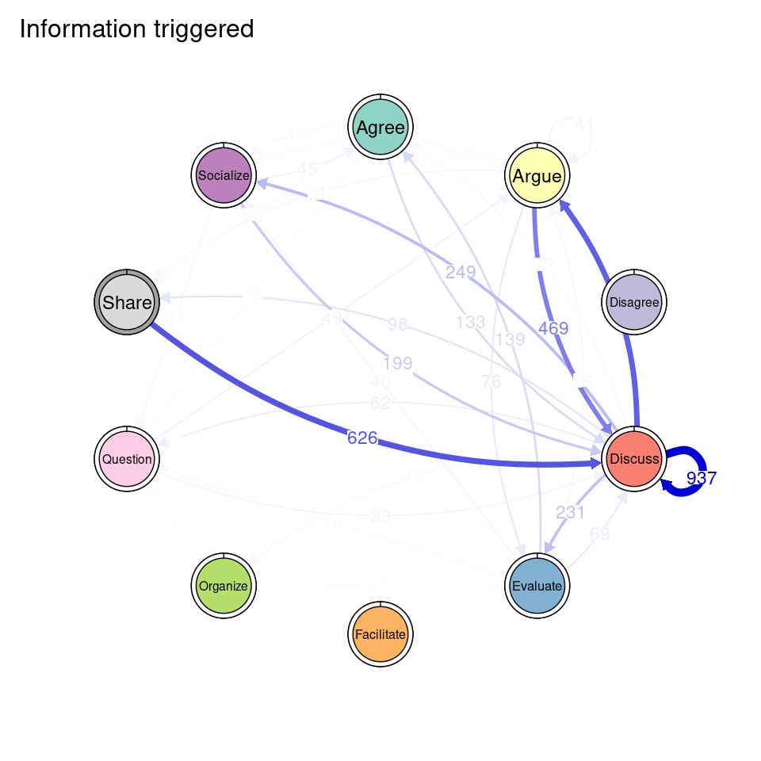

17 Mining Patterns and Clusters with Transition Network Analysis: A Heterogeneity Approach
tna R package to understand the distinct transition dynamics between states or events in each cluster through the study of centrality measures, communities and cliques. Lastly, we exemplify how to implement other forms of clustering (e.g., distance based) and grouping, as well as other types of transition networks (e.g., frequency-based transition networks).
1 Introduction
Clusters, within the context of Transition Network Analysis (TNA), represent distinct subgroups within the sequence data that exhibit unique transition patterns between states or events [1]. In other words, these clusters share similar transition dynamics that are closer to each other within the same cluster and rather different from other clusters. Identifying these clusters rests on the assumption that students’ behavior varies across contexts and conditions giving rise to patterns of similar behavior that can be captured by appropriate clustering techniques. In doing so, clustering mines these unobserved patterns that may be overlooked when studying the data as a whole without considering the heterogeneity. Not accounting for the heterogeneity in the data may obscure individual differences [2], let alone the true underlying structure.
Clusters often arise from an underlying data generation mechanism that shapes how learners interact with tasks, contexts, and each other. The data generating mechanism reflects the interplay of cognitive, emotional, and social processes, as well as the structure and demands of the learning environment. For instance, self-regulation as a data generating mechanism shapes the transitions between states —such as planning, monitoring, and adaptation— which are driven by learners’ efforts to achieve goals, respond to feedback, or enact their tasks [3]. External factors, such as the presence of collaborative tasks or deadlines, may also influence these transitions by prompting learners to emphasize specific strategies like socio-emotional regulation or task coordination. Additionally, the heterogeneity in learners’ dispositions contributes to diverse patterns in how they regulate their learning as well as the facilitation and contextual variables. Together, these factors generate the distinct SRL transition patterns that are captured and represented with TNA clusters offering a window into their learning processes.
Capturing such patterns allows to accurately understand students’ learning processes and their variations. Furthermore, it provides a foundation for theory building by linking these clusters to specific underlying mechanisms, e.g., self-regulation tactics and strategies. Clusters also represent episodes —sessions, epochs or times— where learners manifest certain behaviors. For instance, in a learning management system (LMS), a cluster could represent students’ pattern of focus on assessment, another may represent students’ engagement with their lectures, and so on. In the same vein, in self-regulated learning, clusters reveal variations in learning strategies, such as learners who adapt effectively by transitioning from monitoring to task adaptation, demonstrating advanced metacognitive skills. In contrast, some clusters may show learners stuck in cycles of monitoring and exploration without progressing, highlighting inefficiencies in self-regulation that could benefit from targeted interventions.
The learning analytics literature has a rich tradition of grouping students’ similar behavior using similar methods, e.g., in sequence mining of LMS data these clusters are often referred to as tactics and aims to find clusters of online behavior [4], self-regulation [5], or engagement [6]. One can say that clusters in TNA are similar, however, the emphasis here is on clusters that share similar transition dynamics.
Clustering in TNA not only identifies subgroups, but also broadens our understanding of the strategies learners employ [7]. When we analyze the group as a whole, only the average or most common patterns are visible. Instead, clustering allows to place the focus in patterns that are unique to specific subgroups, which may have been eclipsed by the general trends [2]. Moreover, clustering allows researchers to ask questions about the conditions under which specific patterns emerge if we use covariates and explanatory variables as part of the clustering model. For instance, do learners who frequently transition between planning and monitoring perform better in problem-solving tasks, and how does this vary in collaborative versus individual learning settings? Do emotional regulation clusters correlate with sustained engagement in challenging tasks, and how can these insights guide interventions?
In TNA, clustering the sequence data is performed through identifying distinct transition patterns using mixture Markov models (MMM) [8]. Unlike simple Markov models that assume homogeneity in transition dynamics across all data, MMM accounts for the coexistence of multiple latent subgroups, each governed by its own unique transition matrix. MMM works by assigning each sequence to one of latent subgroups which share similar transition probabilities. In general it is a robust and flexible technique for clustering sequential data and more importantly it allows the inclusion of covariates that help identify or explain why certain clusters emerged.
Using covariates allows researchers to explore what factors are associated with the emergence of specific clusters [9]. For example, higher-performing groups might consistently be involved in clusters of transitions involving monitoring and adaptation, reflecting emphasis on a metacognitive approach to their tasks. Such level of analysis contextualizes the clusters and also provides actionable insights into the conditions under which specific behaviors emerge.
In this chapter, we provide a tutorial on how to identify and study clusters within TNA. We first review related works addressing the heterogeneity of transition dynamics between states or events in the education literature. We then provide a step-by-step tutorial using R on how to implement clustering in TNA using the seqHMM [10] and the tna [11] packages.
3 Tutorial: Clusters in TNA
In this section we present a step-by-step tutorial on how to identify and study clusters within TNA. Specifically, we will illustrate how to identify clusters using MMMs, visualize them, compare them, detect communities and compute centralities. We also illustrate how to implement other clustering and grouping techniques. To be able to follow the tutorial, it is assumed that the reader is familiar with the R programming language. If that is not the case, it is recommended to refer to previous tutorials on the basics of R [15], data cleaning [16], basic statistics [17], and visualization [18]. It is also recommended to have previous knowledge about Markov models [8] and to have read Chapter 15 about TNA [19].
3.1 Importing libraries
As a first step in our tutorial, we will import the necessary libraries:
- tidyverse: A collection of R packages for data science, including tools for data manipulation (
dplyr), visualization (ggplot2), tidying data (tidyr), and more, designed to work seamlessly together [20]. - TraMineR: A package for sequence analysis that provides methods to analyze and visualize sequential data, like event transitions or state changes [21].
- seqHMM: A package for sequence analysis supporting modeling and clustering of sequential data using various Markov models [10].
- tna: A package for implementing TNA, offering tools to estimate, visualize and investigate transitions over time using a network lens [11].
- rio: A package for reading data in several formats [22].
library(tidyverse) # install.packages("tidyverse")
library(TraMineR) # install.packages("TraMineR")
library(seqHMM) # install.packages("seqHMM")
library(tna) # install.packages("tna")
library(rio) # install.packages("rio")3.2 Preparing the data
We will use a simulated dataset based on a recent study by Saqr and López-Pernas [23], containing students’ coded utterances in project-based learning implemented through online forum discussions. In this dataset, each row represents a team’s collaboration on a problem, containing the ordered coded utterances in each column. In addition, the dataset contains the grade for each student. There are 3000 sequences in total and 10 different types of coded utterances: agree, argue, disagree, discuss, evaluate, facilitate, organize, question, share, and socialize.
simulated_data <- import("https://github.com/lamethods/data2/raw/main/pbl/pbl.RDS")We can use the dataset to create a sequence object using the seqdef function from TraMineR and pass our coded data as an input (excluding the grades).
sequ <- seqdef(simulated_data[, -1])3.3 Clustering
In our next step, we will cluster our sequence data with the aim of finding distinct groups that are governed by different transition dynamics. Specifically, we will fit an MMM to our data. A Markov model is a statistical model used to describe systems that transition between states with certain probabilities [8]. Markov models work under the assumption that the probability of moving to the next state depends only on the current state, not on the sequence of states that preceded it. A mixture Markov model extends the Markov model by allowing for multiple subpopulations or groups, each with its own set of transition probabilities (see Figure 17.1). Instead of assuming a single transition structure for all data, it models the data as a combination (or mixture) of multiple Markov models, where each component represents a different latent subgroup. For more details on these concepts, please refer to [8].

We will use the seqHMM library [10] to cluster our sequences of students’ collaboration in groups using an MMM. When dealing with long sequences, the algorithm in charge of finding the best fitting model may take a long time. Therefore, it is recommended to provide a starting value of initial and transition probabilities that we hypothesize will be close to the real one that we expect the algorithm to find. As is the case in most clustering techniques, we do not know the optimum number of clusters. We illustrate the process for four clusters in this tutorial. In practice, we should estimate different models with different number of clusters to see which is the best fitting (lowest Bayesian Information Criterion level). Please, refer to a previous tutorial on Markov models for more details on this step [8].
To simulate the transition probabilities, we use the function simulate_transition_probs from seqHMM. As the first input, we provide the number of events or states in our model (ten in our case). As the second input we provide the number of clusters that we expect to find in this model (as mentioned before, we should try several combinations).
To simulate the initial probabilities, we extract the first coded utterance for the complete sequence object, and we use table on the first column to calculate the proportion of times each code appears as the first step in the collaboration. We replicate these probabilities 4 times (one for each hypothesized cluster).
set.seed(1234)
# Creating constants for the number of codes (10) and the number of clusters (4)
N_CODES <- length(alphabet(sequ))
N_CLUSTERS <- 4
# Transition probabilities (10 codes, 4 clusters)
trans_probs <- simulate_transition_probs(N_CODES, N_CLUSTERS, diag_c = 1)
# Initial probabilities (proportion of each code in t = 1)
init_probs <- as.numeric(prop.table(table(sequ[, 1])[1:N_CODES]))
# Replicate initial probabilities for each cluster
init_probs <- replicate(N_CLUSTERS, init_probs, simplify = FALSE)We can now use build_mmm to define our MMM. We provide the sequence object as an input along with the number of clusters we expect to find (n_clusters), the transition probabilities, and the initial probabilities. In addition, an advantage of mixture Markov models —similarly, to other mixture models— is that it can take covariates. To do so, we have to provide the complete dataframe and specify the column(s) that we want to use as covariates, in our case, Grade. It is important to note that this dataframe should be in the same order as our sequence object. In addition, we need to provide a formula. In this case we use the formula ~ 0 + Grade, which indicates that the cluster membership is explained by the students’ grades.
# Build mixture Markov model for 4 clusters
mmm <- build_mmm(sequ,
n_clusters = N_CLUSTERS,
transition_probs = trans_probs,
data = simulated_data,
algorithm =
formula = ~ 0 + Grade,
initial_probs = init_probs)Lastly, we can fit our model using fit_model. We provide the model that we have just defined (mmm) as an input. We can also define a series of parameters to specify the runtime of the algorithm that will find the optimum cluster solution. For example, we can specify how many CPU threads we would like to use (threads argument, 1 by default), that it should have 500 iterations (restart within control_em argument) as well as the optimization algorithm (algorithm within control_em argument, "NLOPT_GD_MLSL_LDS" by default), among others. See [8] and the seqHMM documentation [10] for more details. When dealing with long sequences and complex data like ours, this process can take a long time so you might need to leave your computer working for a few hours to arrive to the best solution. Once it has completed, we will have out fitted mixture Markov model in fit_mmm. Remember that in a real situation you would have to repeat this process for a range of clustering solutions (e.g., 2–10) to identify the optimum number of clusters.
fit_mmm <- fit_model(
mmm,
global_step = TRUE,
local_step = TRUE,
threads = 60,
control_em = list(
restart = list(times = 500, n_optimum = 501),
algorithm = "NLOPT_GD_MLSL_LDS"
))3.4 Creating and visualizing TNA results
Now that we have our model fitted, we can use TNA —through the tna package [11]— to inspect the clusters that we have identified. We can use the function group_tna to create a grouped TNA model based on the clustering results. Specifically, we need to pass the MMM object (fit_mmm$model) as an argument.
tna_group <- group_tna(fit_mmm$model)The functions that we have learned in Chapter 15 [19] apply also to our grouped model created from the clustering results. For instance, we can plot the model using the plot function, and a separate plot will be created for each cluster, each with their own initial and transition probabilities (Figure 17.2). As a reminder, the pie around each node represents the initial probability of each code, whereas the arrows represent the transition probabilities between them.
We can see that Cluster 1 is characterized by discussions starting with socialize, with strong transitions between share and discuss, and disagree and facilitate, argue and discuss, and agree and discuss. Cluster 2 is characterized by starting with argue, and also a strong transition between share and discuss, but also disagree and socialize. Cluster 3 encompasses more diverse of initial probabilities —especially discuss and evaluate. This cluster has a very strong repetition of organize, as well as facilitate. Similar to the previous clusters, share and discuss is the predominant transition between different codes, followed by agree and discuss. Cluster 4 has fewer but stronger transitions, especially between socialize and disagree, share and discuss, and argue and discuss.
plot(tna_group)


We can also use the summary function to obtain a combined summary of the models corresponding to each cluster (Table 17.1). We can see differences in the overall network properties of each cluster. Cluster 3 is the most connected cluster, with the largest number of edges, and highest density value, while Cluster 4 is the least connected one. Clusters 1 and 2 lie in between, Cluster 2 being more dense and interconnected (although with higher variability), while Cluster 1 has higher reciprocity and is more stable.
summary(tna_group)| metric | Cluster 1 | Cluster 2 | Cluster 3 | Cluster 4 |
|---|---|---|---|---|
| Node Count | 10.00 | 10.00 | 10.00 | 10.00 |
| Edge Count | 61.00 | 65.00 | 76.00 | 45.00 |
| Network Density | 0.68 | 0.72 | 0.84 | 0.50 |
| Mean Distance | 0.18 | 0.16 | 0.03 | 0.23 |
| Mean Out-Strength | 1.00 | 1.00 | 1.00 | 1.00 |
| SD Out-Strength | 0.97 | 1.12 | 0.86 | 1.31 |
| Mean In-Strength | 1.00 | 1.00 | 1.00 | 1.00 |
| SD In-Strength | 0.00 | 0.00 | 0.00 | 0.00 |
| Mean Out-Degree | 6.10 | 6.50 | 7.60 | 4.50 |
| SD Out-Degree | 2.69 | 3.17 | 1.90 | 1.84 |
| Centralization (Out-Degree) | 0.32 | 0.42 | 0.25 | 0.37 |
| Centralization (In-Degree) | 0.32 | 0.30 | 0.25 | 0.37 |
| Reciprocity | 0.85 | 0.75 | 0.83 | 0.60 |
Since we entered the grade as a covariate in the clustering process, we can study how grades are related to cluster membership. To obtain a summary of the effect of the covariates, we can use the mmm_stats function from tna. The output of this function is a data frame containing the estimate associated with each covariate (only one in our case: grade) and its confidence interval, the standard error, the t-score, and the p-value. The results are calculated taking Cluster 1 as a reference. From Table 17.2, we can see that grades had a small but statistically significant effect on the membership of clusters 2 and 3 (p-value < 0.05), positive in the case of Cluster 2 (meaning that high achievers were more likely to belong to this cluster), and negative in the case of Cluster 3. For cluster 4, the effect was not statistically significant.
mmm_stats(fit_mmm$model)| Cluster | Variable | Estimate | p_value | CI_Lower | CI_Upper | Std_Error | t_value |
|---|---|---|---|---|---|---|---|
| Cluster 2 | Grade | 0.004 | 0.00 | 0.003 | 0.006 | 0.001 | 6.31 |
| Cluster 3 | Grade | -0.007 | 0.00 | -0.009 | -0.006 | 0.001 | -8.45 |
| Cluster 4 | Grade | 0.000 | 0.58 | -0.001 | 0.002 | 0.001 | 0.55 |
To ease the interpretation of our results henceforward, we can provide the clusters with more meaningful names. We can use the rename_groups function to provide the new names that are representative of each cluster’s dynamics.
cnames <- c("Socially triggered", "Argumentation triggered",
"Facilitated discussions", "Information triggered")
tna_group <- rename_groups(tna_group, cnames)3.5 Communities
Similarly to simple TNA, we can study the specific patterns that characterize each cluster. For example, we can study whether we can detect distinct communities of states or events that often transition to one another to a greater extent than to the rest of the nodes, as well as compare if these communities are similar between clusters. We can obtain the community assignments using the communities function.
communities_group <- communities(tna_group)We can plot the results using the plot function and specifying the method of community detection we want to use. Refer to [24] for more details on the different community finding algorithms. For the example below we chose the Leading Eigen algorithm since it clearly illustrates the existence of different communities (depicted by different colors) in each cluster (Figure 17.3), each encompassing different nodes. Some similarities that can be perceived are that argue and discuss belong to the same community in each of the four clusters, and so do disagree and facilitate and share and argue. Organize is assigned to a community of its own in two clusters, suggesting that this action occurs rarely as a part of the collaboration process —probably more often at the beginning.
Other algorithms would have yielded different results. For example the Infomap [25] algorithm does not detect any communities (i.e., the whole network is a single community) in any of the clusters.
plot(communities_group, method = "leading_eigen")



3.6 Centralities
Centrality measures in transition networks allow to identify the role that each state or event takes in the process. For example, betweenness centrality captures how often a state acts as a bridge within the network, connecting different parts of the process. Out-degree centrality reflects the number of direct transitions originating from a state, indicating to which extent it drives the process towards other states. See [19] for a complete rationale of the role of centrality measures in TNA, and [26] for a detailed description of the most common centrality measures.
When working with clusters in TNA, since each cluster has a different transition probability matrix, the nodes also have different centrality measures. The way to compute them is the same as in regular TNA, i.e., using the centralities function. We can specify which specific centralities we want to compute and plot them using the plot function (Figure 17.4). Betweenness centrality shows the greatest differences. In the Facilitated discussions cluster, Facilitate has the highest betweenness followed by Disagree. In the Information triggered cluster, Argue is the node with the highest betweenness, followed by Socialize. In Argumentation triggered, the highest betweenness is that of the Evaluate node, followed by Share. In the Socially triggered cluster, Facilitate is the node with the highest betweenness. In terms of In-strength, the four clusters follow similar patterns, with Discuss being the node with the highest value, followed by Socialize. Lastly, regarding Out-strength, Share and Discuss are the nodes with the highest overall centrality values, sharing similar patterns among the clusters. The Facilitate node has the lowest out-strength for all clusters, indicating that is many times a recurring action that is repeated several times in a row. Similarly, the Facilitated discussions cluster has a remarkably low value of out-strength centrality for Organize, meaning that students might be commonly stuck at that point. To better understand the meaning of each of the centrality measures, please refer to [19, 27]. We can also print the centralities for each cluster to find out their exact value.
cents <- centralities(
tna_group,
measures = c("Betweenness", "InStrength", "OutStrength")
)plot(cents, ncol = 3) 
print(cents)3.7 Cliques
TNA provides functions to identify groups of nodes that have a reciprocal relationship, i.e., strong transition probabilities to and from one another. These can be groups of two nodes (dyads), three (triads), and so on. When we wish to detect these patterns when working with clusters, we can use the same function as in simple TNA (cliques), but we need to specify for which of the clusters we want to identify these cliques. For example, if we would like to identify and plot all dyads on the Socially triggered cluster, we must subset the tna_group object by cluster name and then specify the size of the cliques (2 for dyads), as well as any additional parameters (e.g., threshold for considering strong reciprocal connections). We can plot the resulting dyads using the plot function. Do not forget that this function is interactive, so you will need to hit enter in the console to plot all dyads (alternatively, you may add the following argument to the plot function: ask = FALSE). Figure 17.5 shows that there are three dyads in the Socially triggered cluster: one between Argue and Discuss, Discuss and Socialize, and Evaluate and Question.
dyads1 <- cliques(tna_group[["Socially triggered"]], size = 2, threshold = 0.15)
plot(dyads1)


3.8 Other forms of clustering and grouping
Throughout the tutorial we have seen how to identify and study clusters of students that are ruled by different transition patterns. However, we might want to identify groups of students through other mechanisms and only afterwards investigate their properties and transition patterns. In this section, we review different ways in which we can do this.
3.8.1 Clustering sequences
A common way to study log data is through sequence analysis. Within this framework, several dissimilarity measures exist that allow to calculate how similar sequences of events or states are to one another, and cluster them in distinct groups. Distance measures can be broadly categorized in edit distances — such as optimal matching—, shared attributes — such as longest common subsequence (LCS), or longest common prefix (LCP), and distance based on state distributions —e.g., euclidean distance or chi-squared.
In the next code chunk, we calculate the dissimilarity between our sequences using the seqdist function from the TraMineR package, using LCP as the distance measure, which means that sequences that start in the same way will have a shorter distance between them. We then cluster the sequences using hierarchical clustering (as implemented in the hclust function of the stats package) using Ward’s method minimum variance method ("ward.D2"). We establish the number of clusters by using the function cutree and retrieve the cluster assignment. We assign the result to a variable named lcp_clusters, to be able to operate with the cluster assignment later on. We can then visualize them using seqdplot (Figure 17.6) in which we see the distribution of states at each time point. For more details about this process, please refer to [28]. Upon inspection, we can assign names to each of the clusters.
# Compute dissimilarities between sequences using the LCP method.
dissimilarities <- seqdist(sequ, method = "LCP", indel = 1)
# Perform hierarchical clustering on the computed dissimilarities
clusters_sessionsh <- hclust(as.dist(dissimilarities), method = "ward.D2")
# Cut the hierarchical clustering tree into 4 clusters
lcp_clusters <- cutree(clusters_sessionsh, k = 4)
# Plot a distribution plot (seqdplot) for the sequences
# grouped by their cluster assignments.
seqdplot(sequ, group = lcp_clusters, ncol = 5)
# Define meaningful cluster names based on interpretation of the data.
cnamesd <- c("Facilitated discussions", "Information triggered",
"Argumentation triggered", "Socially triggered")
# Assign the corresponding cluster names to the cluster assignment vector.
lcp_clusters <- cnamesd[lcp_clusters]
Once we have our cluster assignments, we can create a new clustered TNA object with the group_tna function, by passing the sequence object and the cluster assignments (lcp_clusters) as arguments. We can visualize the resulting clusters using the plot function as usual (Figure 17.7), as well as perform all of the other operations that we have showcased throughout the chapter (centralities, communities, cliques, etc.).
seq_tna <- group_tna(sequ, group = lcp_clusters)
plot(seq_tna)



3.8.2 Fixed groups
In addition to clustering, we can also create groups based on deterministic or known groups (e.g., gender, grades, course, etc.). In the following chunk, we create a variable named Achievers which is a vector containing the value "High" if the corresponding student has a grade above 50, and "Low" otherwise. We pass this vector as the group argument of group_tna, just like we did in the previous example and we can then us all the range of functions of tna on the two groups (Figure 17.8). This helps us visualize the difference in transition probabilities between low and high achievers.
Achievers <- ifelse(simulated_data$Grade > 50, "High", "Low")
course_tna <- group_tna(sequ, group = Achievers)
plot(course_tna)

3.9 Other forms of TNA
As demonstrated in [19], the TNA framework encompasses other forms of studying transitions, such as frequency-based transition networks. Instead of representing transition probabilities, frequency-based transition networks operate on the absolute values, i.e., the number or share of times each transition has appeared in the whole sequence object. This operationalization might be more appropriate in cases that there are not enough data to make inferences. This mode also supports cluster, allowing to inspect and compare transition frequencies among clusters.
In the chunk below, we create a frequency-based transition network (Figure 17.9), providing the results of the distance-based clustering as the group argument.
tna_group_scaled <- group_ftna(sequ, group = lcp_clusters)
plot(tna_group_scaled)



4 Discussion
Studying the learning process as a homogeneous phenomenon can overlook important variations that exist across different subgroups or contexts, leading to conclusions that may not fully capture the complexity of the phenomenon. Such an approach risks not only diluting the explanatory power of scientific findings but also perpetuating inequalities by failing to account for how distinct groups may experience or respond to the same processes differently. In turn, we should “capitalize on the heterogeneity that characterizes most effects in science” [2] (p. 86), so we can better understand variations, improving the relevance and applicability of our findings across diverse populations.
In this chapter, we have demonstrated how to identify clusters of transition networks, within the scope of TNA. We have illustrated this process for MMM clustering as well as for other forms of clustering. We have also showcased the features of TNA related to centralities, communities, and cliques, which provides as with a rich toolkit to study the heterogeneity of relational dynamics. Centrality measures, for instance, allow us to identify central states or transitions that shape the flow of behaviors or interactions. Influential nodes can vary significantly across subgroups, representing the diversity in how processes unfold.
Similarly, communities within the network can uncover tightly connected groups of transitions that represent cohesive patterns, dynamics, or strategies. These sub-networks might reveal distinct behavioral tendencies or shared practices that are specific to certain groups or contexts. Cliques, as smaller subsets of closely interconnected transitions, provide yet another layer of detail, capturing unique micro-patterns that might otherwise go overlooked.
Understanding the different patterns that can be identified from transition networks and how they prevail or differ among clusters, provides a comprehensive view on learning processes from a heterogeneity lens. In other words, identifying and studying different subgroups help us move beyond simplistic, one-size-fits-all interpretations to recognize the complexity and diversity inherent in behavior and interaction. Such interpretations have the potential to advance learning theories and support the design of interventions or policies that are sensitive to the diverse ways individuals and groups experience and respond to learning processes, which is one of the driving goals of learning analytics research. Embracing heterogeneity constitutes a step forward in ensuring that findings are equitable and capture diversity.